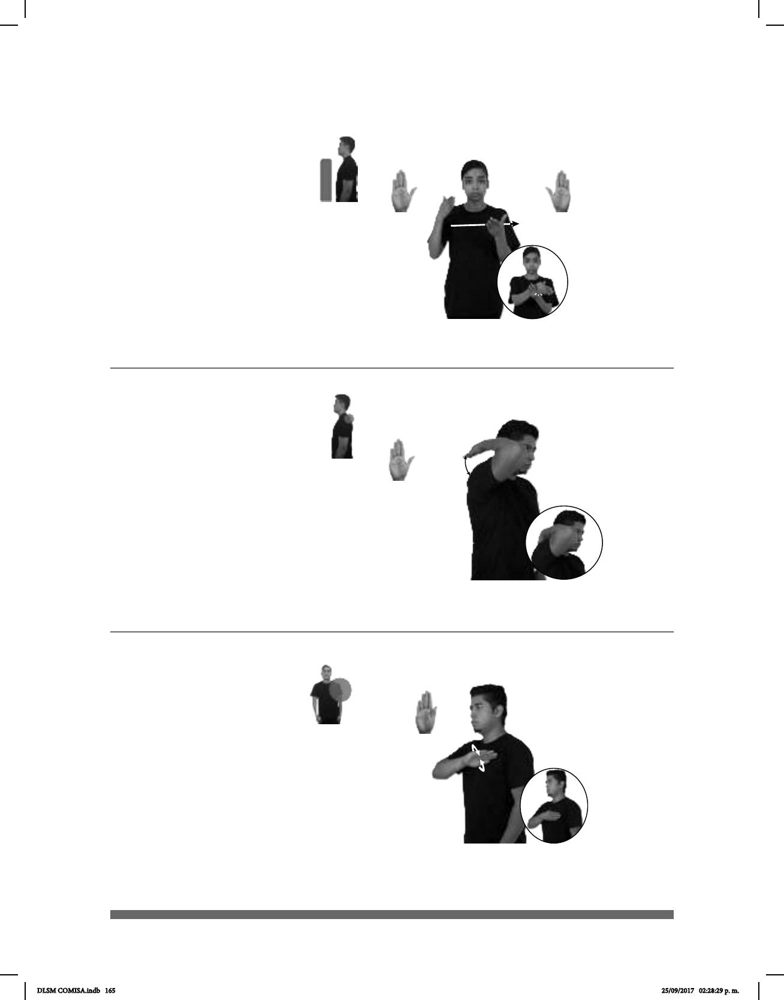

165
1
2
(B-P 163)
MUSEO dm-ROCÍO YA ENTRAR
Rocío ya entró al museo.
Seña: SB
MD y MB B-P.2
MD palma oblicua hacia
adentro y hacia la izquierda. MB palma
hacia arriba.
MD y MB a la altura del
pecho.
La MD golpea la MB en
muñeca de MD.
Simula la acción de
llegar a un lugar.
1. v. intr. Ir o pasar de
afuera a adentro. 2. sust. f. Espacio por
donde se entra a alguna parte.
Seña: SM
B-P.2
Palma hacia adentro.
Sobre la espalda.
La mano golpea la
espalda repetidamente.
sust. f. Parte posterior
del cuerpo humano, opuesta al
pecho, que va desde los hombros
hasta la cintura.
(B-P 164)
MAMÁ ESPALDA pro-ELLA DOLER
A mamá le duele la espalda.
Seña: SM
B-P.6
La palma inicia hacia
abajo y termina hacia adentro.
Sobre el pecho del lado
izquierdo.
El antebrazo gira y
cambia la orientación de la mano.
País ubicado en el
oeste de Europa y el norte de África
cuya capital es Madrid.
(B-P 165)
ESPAÑA dm-JOEL YA ESTUDIAR
Joel estudió en España.
DLSM COMISA.indb 165 25/09/2017 02:28:29 p. m.